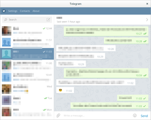

Telegram
Dieser Artikel wurde für die folgenden Ubuntu-Versionen getestet:
Ubuntu 16.04 Xenial Xerus
Ubuntu 14.04 Trusty Tahr
Zum Verständnis dieses Artikels sind folgende Seiten hilfreich:
Telegram  ist ein kostenloser, werbefreier und teilweise freier Kurznachrichtendienst, der in seinem Aussehen WhatsApp ähnelt. Er ist in erster Linie für Smartphones konzipiert worden, ein Smartphone ist jedoch nicht erforderlich. Es stehen für den Rechner ebenfalls Anwendungen zur Verfügung.
ist ein kostenloser, werbefreier und teilweise freier Kurznachrichtendienst, der in seinem Aussehen WhatsApp ähnelt. Er ist in erster Linie für Smartphones konzipiert worden, ein Smartphone ist jedoch nicht erforderlich. Es stehen für den Rechner ebenfalls Anwendungen zur Verfügung.
In den sogenannten geheimen Chats (nicht von allen Anwendungen unterstützt) wird die Kommunikation Ende-zu-Ende verschlüsselt (sonst zwischen Client und Server). Sie werden daher auch nicht mit den anderen eigenen Geräten synchronisiert und sie stehen nicht für Gruppen zur Verfügung. Außerdem ist darin eine Selbstzerstörungsfunktion für die Nachrichten aktivierbar, sodass sich die Nachrichten nach einer festgelegten Zeit unwiderruflich auf beiden Geräten löschen. Ansonsten ermöglicht der Nachrichtendienst Gruppen mit bis zu 200 Mitgliedern und den Versand von Bildern, Videos, Sprachnachrichten und Dateien aller Art.
Im Gegensatz zu den Servern sind die Programme auf Anwenderseite quelloffene und freie Software. Ein Kritikpunkt am Datenschutz des Dienstes ist, dass die Smartphone-App automatisch das Telefonbuch an die Telegram-Server sendet und speichert, damit Nutzer sich bequem finden und kontaktieren können.
Hinweis:
Für die Anmeldung ist ein Telefon nötig, da als Kontoname die Telefonnummer dient und ein Aktivierungscode per SMS verschickt oder alternativ das Konto per Anruf aktiviert wird.
Telegram verwendet das selbstentwickelte Verschlüsselungsprotokoll MProto .
Installation¶
Telegram ist nicht in den offiziellen Paketquellen enthalten und muss manuell installiert werden. Es gibt verschiedene Möglichkeiten, Telegram auf dem Rechner zu nutzen. Manche sind deutschsprachig, integrieren sich in die Benutzeroberfläche oder unterstützen optionale Nutzernamen, über die man andere kontaktieren kann, ohne deren Telefonnummer zu kennen. Hier eine Übersicht:
| Telegram-Anwendungen | |||||||
| Name | Installation | Sprache | Benachrichtigungen | Nutzernamen | Geheime Chats | Bemerkungen | |
| Telegram Desktop | Nur Herunterladen / Aus PPA (Fremdquelle) |  | Ja | Ja | Nein | Offizielle Anwendung, optional: PIN-CODE und zweistufige Bestätigung | |
| Telegram Web | keine (Webseite) | | Ja (mit Firefox oder Chromium) | Ja | Nein | Offizielle Anwendung, integriert sich in Firefox oder Chromium | |
| Unity Web App | Aus PPA (Fremdquelle) | | Ja | Ja | Nein | Voraussetzung: Unity | |
| Firefox OS App | Firefox Marketplace | | Nein | Ja | Nein | Voraussetzung: Firefox | |
| Cutegram | Aus PPA (Fremdquelle) | | Ja | Nein | Ja | Anpassbares Erscheinungsbild | |
| Pidgin-Erweiterung | Aus PPA (Fremdquelle) | / | Ja | Nein | Ja | Früher Entwicklungsstand (eingeschränkter Funktionsumfang), Voraussetzung: Pidgin | |
| Telegram CLI | Manuell kompilieren | | Nein | Ja | Ja | Kommandozeilenprogramm | |
| Telegram | Telegram | | Ja | Ja | Ja | Diese Anwendung ist in der Grundinstallation von Ubuntu Touch, als Scope, enthalten. | |
Telegram Desktop¶
Telegram Desktop ist die offizielle Telegram-Anwendung für Linux. Es integriert sich mit einem Symbol im Benachrichtigungsfeld von Ubuntu (seit Version 0.7.7 ) und bietet die meisten Einstellungsmöglichkeiten. Der einfachste Weg ist, das Programm von der Webseite herunterzuladen. So erhält man Aktualisierungen am schnellsten. Alternativ kann es aus einer inoffiziellen PPA (Fremdquelle) installiert werden, dann funktioniert die programmeigene Aktualisierung nicht mehr und man ist auf Aktualisierungen des PPA-Betreibers angewiesen.
Von der Webseite¶
Installation in den persönlichen Ordner¶
Zur Installation muss das Programm heruntergeladen  und am gewünschten Ort entpackt [4] werden (z.B. im Persönlichen Ordner unter ~/Telegram). Der entpackte Ordner enthält die Binärdatei Telegram, mit der das Programm das erste Mal gestartet wird [2]. Ein Anwendungsstarter wird automatisch erstellt. Trotz der manuellen Installation aktualisiert sich das Programm automatisch selbst.
und am gewünschten Ort entpackt [4] werden (z.B. im Persönlichen Ordner unter ~/Telegram). Der entpackte Ordner enthält die Binärdatei Telegram, mit der das Programm das erste Mal gestartet wird [2]. Ein Anwendungsstarter wird automatisch erstellt. Trotz der manuellen Installation aktualisiert sich das Programm automatisch selbst.
Hinweis!
Nach der Installation findet man das Programm im Anwendungsmenü unter "Internet -> Telegram Desktop" [2].
Systemweite Installation¶
Falls man das Programm systemweit für alle Benutzer zugänglich machen möchte, kann es komplett im Terminal erledigt werden:
1. Die aktuelle Telegram-Version herunterladen
cd /tmp
Für 32-Bit-Systeme:
wget -O telegram-desktop.tar.xz https://tdesktop.com/linux32
Für 64-Bit-Systeme:
wget -O telegram-desktop.tar.xz https://tdesktop.com/linux
2. Telegram auspacken und verlinken
sudo tar -Jxf telegram-desktop.tar.xz -C /opt/ sudo ln -s /opt/Telegram/Telegram /usr/local/bin/telegram
3. Die Datei /usr/share/applications/telegramdesktop.desktop mit dem folgenden Inhalt anlegen[6]:
[Desktop Entry] Encoding=UTF-8 Version=1.0 Name=Telegram Desktop Comment=Official desktop version of Telegram messaging app Exec=telegram %u Icon=telegram Terminal=false StartupWMClass=Telegram Type=Application Categories=Network; MimeType=application/x-xdg-protocol-tg;x-scheme-handler/tg; X-Desktop-File-Install-Version=0.22
Danach wird der Programmstarter im Anwendungsmenü unter "Internet -> Telegram Desktop" vorhanden sein.
 4. Autostart
4. Autostart
Wenn der Telegram Desktop beim GUI-Start nicht in einem Fenster sondern lediglich im Systemtray gestartet werden soll, soll im neu erzeugtem Programmstarter "Systemwerkzeuge -> Einstellungen -> Startprogramme -> Telegram Desktop" das Parameter -startintray (ab der Version 0.7.10 vorhanden) benutzt werden:
/opt/Telegram/Telegram -startintray
Fremdquelle (PPA)¶
Adresszeile zum Hinzufügen des PPAs:
ppa:atareao/telegram
Hinweis!
Zusätzliche Fremdquellen können das System gefährden.
Ein PPA unterstützt nicht zwangsläufig alle Ubuntu-Versionen. Weitere Informationen sind der  PPA-Beschreibung des Eigentümers/Teams atareao zu entnehmen.
PPA-Beschreibung des Eigentümers/Teams atareao zu entnehmen.
Damit Pakete aus dem PPA genutzt werden können, müssen die Paketquellen neu eingelesen werden.
Dann installiert man das folgende Paket [1]:
telegram (PPA)
 mit apturl
mit apturl
Paketliste zum Kopieren:
sudo apt-get install telegram
sudo aptitude install telegram
Eine Befehlszeile für das Hinzufügen des PPA und die Installation des Telegram-Clients:
sudo apt-add-repository -y 'ppa:atareao/telegram'; sudo apt-get update; sudo apt-get -y install telegram
Unity Web App¶
Unity-Nutzer können die Webversion auch als Web App nutzen. Damit wird man durch den Nachrichten-Indikator über neue Nachrichten informiert. Allerdings ist die Web App nicht immer ganz so aktuell wie die Webversion. Die Installation erfolgt über eine Fremdquelle:
Adresszeile zum Hinzufügen des PPAs:
ppa:costales/unity-webapps-telegram
Hinweis!
Zusätzliche Fremdquellen können das System gefährden.
Ein PPA unterstützt nicht zwangsläufig alle Ubuntu-Versionen. Weitere Informationen sind der PPA-Beschreibung des Eigentümers/Teams costales zu entnehmen.
Damit Pakete aus dem PPA genutzt werden können, müssen die Paketquellen neu eingelesen werden.
Dann installiert man das folgende Paket [1]:
unity-webapps-telegram (PPA)
mit apturl
Paketliste zum Kopieren:
sudo apt-get install unity-webapps-telegram
sudo aptitude install unity-webapps-telegram
Nach der Installation findet man die App im Anwendungsmenü unter "Sonstiges -> Telegram" [2].
Firefox OS App¶
Firefox-Nutzer können sich die App für Firefox OS auch auf dem Rechner installieren. Diese ist im Grunde ebenfalls die Webversion, allerdings nicht immer ganz so aktuell. Die Installation erfolgt über den Firefox Marketplace .
Hinweis!
Fremdsoftware kann das System gefährden.
Nach der Installation findet man die App im Anwendungsmenü unter "Sonstiges -> Telegram" [2].
Cutegram¶
Cutegram ist eine alternative Telegram-Anwendung für Linux, Mac und Windows von Aseman , die im Gegensatz zum offiziellen Telgram Desktop geheime Chats (Ende-zu-Ende-verschlüsselt) unterstützt. Unter Ubuntu Ubuntu 14.04 lässt sich ein PPA zur Installation nutzen, für neuere Ubuntu-Versionen erfolgt die Installation manuell.
Manuelle Installation¶
Von Aseman werden
DEB-Pakete angeboten.
Die unterstützten Ubuntuversionen und Architekturen werden aufgelistet.
Nachdem man sie für die korrekte Ubuntuversion und Architektur geladen hat, müssen DEB-Pakete noch installiert werden.
Hinweis!
Fremdpakete können das System gefährden.
Dann muss man sich um Aktualisierungen allerdings selbst kümmern. Nach der Installation findet man das Programm im Anwendungsmenü unter "Internet -> Cutegram" [2].
PPA¶
Adresszeile zum Hinzufügen des PPAs:
ppa:aseman/desktop-apps
Hinweis!
Zusätzliche Fremdquellen können das System gefährden.
Ein PPA unterstützt nicht zwangsläufig alle Ubuntu-Versionen. Weitere Informationen sind der PPA-Beschreibung des Eigentümers/Teams aseman zu entnehmen.
Damit Pakete aus dem PPA genutzt werden können, müssen die Paketquellen neu eingelesen werden.
Dann installiert man das folgende Paket [1]:
cutegram (PPA, nur Ubuntu 14.04)
mit apturl
Paketliste zum Kopieren:
sudo apt-get install cutegram
sudo aptitude install cutegram
Eine Befehlszeile für das Hinzufügen des PPA und die Installation von Cutegram:
sudo apt-add-repository -y 'ppa:aseman/desktop-apps'; sudo apt-get update; sudo apt-get -y install cutegram
Nach der Installation findet man das Programm im Anwendungsmenü unter "Internet -> Cutegram" [2].
Pidgin-Erweiterung¶
Wer das vielseitige Kurznachrichtenprogramm Pidgin nutzt, kann auch Telegram darin integrieren. Hierfür muss das entsprechende libpurple-Plugin installiert werden (das auch mit anderen Purple-basierten Kurznachrichtenprogrammen funktionieren sollte).
Adresszeile zum Hinzufügen des PPAs:
ppa:nilarimogard/webupd8
Hinweis!
Zusätzliche Fremdquellen können das System gefährden.
Ein PPA unterstützt nicht zwangsläufig alle Ubuntu-Versionen. Weitere Informationen sind der PPA-Beschreibung des Eigentümers/Teams nilarimogard zu entnehmen.
Damit Pakete aus dem PPA genutzt werden können, müssen die Paketquellen neu eingelesen werden.
Dann installiert man das folgende Paket [1]:
telegram-purple (PPA)
mit apturl
Paketliste zum Kopieren:
sudo apt-get install telegram-purple
sudo aptitude install telegram-purple
Pidgin muss neugestartet werden.
Telegram CLI¶
Wer am liebsten in der Kommandozeile chattet, für den ist Telegram CLI genau das richtige. Telegram CLI ist der Unterbau zu Telegram Desktop und ermöglicht geheime (Ende-zu-Ende-verschlüsselte) Chats.
Zur Vorbereitung der Installation installiert man die für die Kompilierung nötigen Pakete [1]:
libreadline-dev
libconfig-dev (optional)
libssl-dev
lua5.2
liblua5.2-dev (optional)
libevent-dev
libjansson-dev (optional)
libpython-dev (optional)
make
mit apturl
Paketliste zum Kopieren:
sudo apt-get install libreadline-dev libconfig-dev libssl-dev lua5.2 liblua5.2-dev libevent-dev libjansson-dev libpython-dev make
sudo aptitude install libreadline-dev libconfig-dev libssl-dev lua5.2 liblua5.2-dev libevent-dev libjansson-dev libpython-dev make
Dann lädt man sich den Quelltext (s. Github ) herunter und wechselt in das neue Verzeichnis. Entweder mithilfe von git:
git clone --recursive https://github.com/vysheng/tg.git cd tg
Oder direkt herunterladen und entpacken [4]:
wget https://github.com/vysheng/tg/archive/master.zip -O tg-master.zip unzip tg-master.zip cd tg-master
Die Kompilierung erfolgt dann über die folgenden Befehle [5]:
./configure make
Hinweis!
Fremdsoftware kann das System gefährden.
Bedienung¶
 Beim ersten Start gibt man seine Telefonnummer ein, die als Kontoname dient. Daraufhin wird per SMS und als Telegram-Nachricht an bereits angemeldete Geräte ein Bestätigungscode geschickt. Erfolgt die Eingabe des Bestätigungscodes nicht innerhalb weniger Minuten, z.B. weil das unter der Telefonnummer angeschlossene Gerät keine SMS-Funktion unterstützt, erfolgt ein automatischer Anruf, bei dem der Bestätigungscode vorgelesen wird. Nach der Eingabe ist die Anwendung dann als neues Gerät bestätigt. Die Bedienung der Programme mit grafischer Oberfläche unterscheidet sich nur geringfügig. Insbesondere Telegram Web und die beiden Web Apps ähneln Telegram Desktop sehr stark. Geheime Chats können bisher nur mit Cutegram, Telegram CLI und der Pidgin-Erweiterung genutzt werden.
Hinweis:
Ein geheimer Chat findet (wegen der Ende-zu-Ende-Verschlüsselung) nur zwischen zwei Geräten statt und wird nicht über die Cloud mit anderen eigenen Geräten synchronisiert.
Telegram Desktop¶
Am Kopf der Kontaktliste findet man ein Feld zum Suchen nach Kontakten und Gruppen. Über das Symbol rechts in der Suchleiste kann eine neue Gruppe erstellt werden. Um eine neue Unterhaltung zu beginnen oder einen neuen Kontakt hinzuzufügen, klickt man in der Menüleiste auf "Kontakte". Unter "Einstellungen" findet man eine Reihe von Einstellungen vom Aussehen über den optionalen PIN-Code und die zweistufige Bestätigung bis hin zur Möglichkeit, einen Proxy einzustellen. Möchte man die Einstellungen einer einzelnen Unterhaltung öffnen, so klickt man in der Kopfzeile der Unterhaltung auf den Namen des Partner bzw. der Gruppe.
Telegram Web¶
Es empfiehlt sich, den Tab mit Telegram Web anzuheften, sodass man immer automatisch eingeloggt wird, wenn man den Browser startet. Es ist außerdem zu beachten, dass die Nicht-Verfolgen-Funktion (s. Firefox-Hilfe ) von Telegram Web berücksichtigt wird. Ist diese eingeschaltet, vergisst Telegram Web nach jeder Nutzung das Konto und man muss sich erneut per Bestätigungscode einloggen.
Cutegram¶
In der Leiste ganz links finden sich Schaltflächen zum Starten eines geheimen Chats, eines Gruppenchats, zum Öffnen der Kontaktliste und der Einstellungen. Hier kann man u.a. die Sprache auf Deutsch umstellen, das Aussehen anpassen und die Benachrichtigungen anpassen. Mit einem Klick auf das Dateisymbol rechts oben in einer Unterhaltung, öffnet sich der Ordner mit allen (Medien-)Dateien der Unterhaltung. Über das Kamerasymbol über dem Eingabefeld kann man einen Schnappschuss von sich aufnehmen und dem Gesprächspartner schicken.
Pidgin-Erweiterung¶
Die allgemeine Bedienung findet sich im Artikel Pidgin. Man kann unter "Konten -> Konten verwalten -> Hinzufügen …" das Telegram-Konto hinzufügen. Da es sich um einen frühen Entwicklungsstand handelt, ist der Funktionsumfang eingeschränkt. Das Senden und Empfangen von Textnachrichten, nur Empfangen von Bildern und die Anzeige der Profilbilder wird unterstützt. Im Gegensatz zu allen anderen Programmen mit grafischer Oberfläche sind außerdem geheime (Ende-zu-Ende-verschlüsselte) Chats möglich. Gestartet wird ein solcher mit einem Rechtsklick auf eine Person in der Kontaktliste und "Start Secret Chat". Unter "Konten -> Konten verwalten -> Bearbeiten … -> Erweitert -> Accept Secret Chats" kann man einstellen, ob ankommende geheime Chats angenommen, abgelehnt oder ob nachgefragt werden soll.
Telegram CLI¶
Man wechselt im Terminal [3] in das Installationsverzeichnis und startet das Programm [2] über:
cd Pfad/zum/Installationsverzeichnis bin/telegram-cli
Hier die wichtigsten Funktionen:
help #Listet alle verfügbaren Befehle auf contact_list #Kontaktliste anzeigen dialog_list #Unterhaltungen anzeigen history <unterhaltung> #Unterhaltungsverlauf anzeigen create_secret_chat <nutzer> #Geheimen Chat starten msg <unterhaltung> <nachricht> #Einzelne Nachricht senden chat_with_peer <unterhaltung> #Eine Unterhaltung öffnen (mit /exit beenden)
Die weitere Bedienung ist auf der Github-Seite dokumentiert.
Tipps¶
Telefonnummer wechseln¶
Da die Telefonnummer als Kontoname dient und zum Versenden der Bestätigungscodes gebraucht wird, sollte man bei einem Wechsel der Telefonnummer diese auch bei Telegram ändern. Dies ist nur in der Smartphone-App möglich und geschieht dort über die Einstellungen. Telegram ändert dann auch automatisch bei allen Freunden mit Smartphone den Eintrag im Telefonbuch, so dass diese selbst nichts ändern müssen. Alternativ kann man natürlich auch sein Konto löschen und sich neu anmelden.
Andere Geräte abmelden¶
Wenn man Telegram auf verschiedenen Geräten und z.B. fremden Browsern genutzt hat und sichergehen möchte, dass niemand darüber Zugriff auf das eigene Konto erhält, kann man in den Einstellungen alle anderen Geräte abmelden. Möchte man Telegram danach selbst wieder auf anderen Geräten nutzen, kann man sich dort einfach erneut per Bestätigungscode anmelden.
Geheime Chats verifizieren¶
Um zu überprüfen, dass beim Aufbau eines geheimen Chats keine Manipulation eines Dritten (Man-in-the-Middle-Angriff) stattgefunden hat, kann man sich in der Smartphone-App in den Einstellungen des Chats ein Schlüsselbild anzeigen lassen. Dieses muss auf beiden Geräten übereinstimmen.
Öffentlicher Nutzername¶
Man kann in den Einstellungen einen öffentlichen Nutzernamen festlegen, damit einem Personen schreiben können, ohne die Telefonnummer zu kennen. Man findet Personen über diesen Weg, in dem man einfach im Suchfeld den Nutzernamen der Person eintippt. Man kann auch Freunden einen Link in der Form telegram.me/NUTZERNAME schicken. Bei einem Klick öffnet sich automatisch ein Chat (falls die Person Telegram verwendet). Sollte der gewünschte Nutzername schon belegt sein, aber er entspricht dem eigenen Namen bei Twitter & Facebook, Facebook & Instagram oder Instagram & Twitter, kann man sich an den Telegram-Support wenden und den Namen möglicherweise übertragen bekommen.
Man sollte aber bedenken, dass einem mit einem öffentlichen Nutzernamen Personen Nachrichten senden können, die einen gar nicht kennen. Wenn man das nicht möchte, sollte man keinen öffentlichen Nutzernamen festlegen.
Automatische Selbstlöschung des Kontos¶
Wenn das Konto für sechs Monate nicht genutzt wird, wird es automatisch gelöscht. Mit der Smartphone-App kann man diese Zeit selbst festlegen (zwischen einem Monat und einem Jahr).
Problembehebung¶
Benachrichtigungssymbol von Telegram Desktop unter GNOME¶
Macht das Benachrichtigungssymbol von Telegram Desktop unter der GNOME Shell Probleme, hilft die Installation der Erweiterung AppIndicator Support . Damit erhält man Benachrichtigungssymbole wie unter Unity, wahlweise in der oberen Leiste oder unten im Benachrichtigungsbereich.
Links¶
Telegram-Apps
, die auf der offiziellen Seite gelistet werden
Pawel Walerjewitsch Durow - Der Geldgeber hinter Telegram
Aseman
- Cutegram-EntwicklerEntwicklerseite von telegram-purple (Pidgin-Plugin)
- Erstellt mit Inyoka
-
 2004 – 2017 ubuntuusers.de • Einige Rechte vorbehalten
2004 – 2017 ubuntuusers.de • Einige Rechte vorbehalten
Lizenz • Kontakt • Datenschutz • Impressum • Serverstatus -
Serverhousing gespendet von